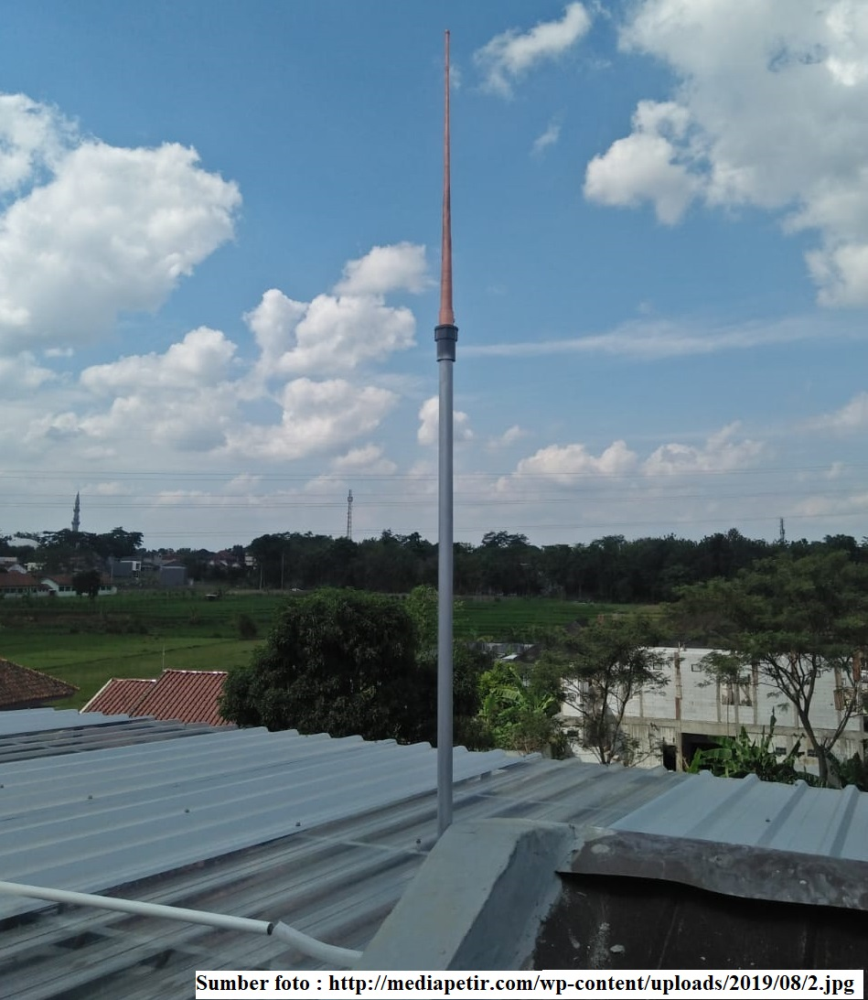

• Siswa dapat menyebutkan penggunaan teknologi listrik di lingkungan sekitar.
Listrik statis yang dapat kita jumpai dalam kehidupan sehari-hari ada yang terjadi secara alami maupun secara buatan. Munculnya petir ketika hujan merupakan salah satu bukti keberadaan listrik statis yang muncul secara alami, tanpa ada campur tangan manusia secara langsung. Sedangkan, listrik statis yang terjadi secara buatan di antaranya listrik yang digunakan dalam proses pengecatan mobil dan pada mesin fotokopi.
Gambar 18 Petir
Petir merupakan peristiwa lepasnya muatan listrik statis yang terjadi secara dramatik dan alamiah. Petir terjadi akibat awan yang bergerak di angkasa bergesekan dengan udara. Gesekan tersebut menyebabkan awan bermuatan listrik. Awan seperti ini disebut halilintar. Jika beda potensial satu awan dengan awan lain besar, memungkinkan terjadi loncatan elektron. Loncatan elektron tersebut berupa bunga api yang tampak sebagai kilatan cahaya. Kilatan cahaya inilah yang disebut petir.
Selain itu, kadang-kadang juga terjadi loncatan elektron dari awan ke bumi melalui benda-benda tertentu seperti pohon atau gedung-gedung. Benda-benda yang dilalui elektron tersebut dikatakan tersambar petir. Untuk menghindari bahaya yang diakibatkan oleh sambaran petir, Benjamin Franklin, orang pertama yang mengamati bahwa petir tak lain adalah listrik statis membuat alat yang ditujukan sebagai penangkal petir. Ia mengusulkan untuk menggunakan batang logam runcing yang ditaruh di atas benda yang akan dihindarkan dari petir, biasanya benda yang berupa bangunan, seperti gedung.
Gambar 19 Penangkal Petir
Penangkal petir berupa terdiri atas batang logam berujung runcing yang dihubungkan oleh kawat tembaga dengan lempeng logam yang ditanam dalam tanah sekitar kedalaman 2 meter. Bagian ujung penangkal terbuat dari logam yang merupakan konduktor. Hal ini karena elektron tersebut oleh logam ditangkap kemudian diteruskan ke bumi.
Gambar 20 (a) Cerobong Asap dengan Pengendap Elektrostatis, (b) Skema Pengendapan Elektrostatis
Pengendap elektrostatis berfungsi untuk membersihkan gas buang yang keluar melalui cerobong asap agar tidak mengandung partikel-partikel kotor yang dapat mencemari udara. Komponen utama yang ada pada alat ini adalah kawat yang bermuatan negatif dan pelat logam yang bermuatan positif.
Perhatikan Gambar diatas! Pada saat asap kotor melewati kawat, beberapa partikel abu akan bermuatan negatif. Setelah itu, pelat logam yang bermuatan positif akan menarik partikel abu tersebut sehingga membentuk jelaga yang mudah dibersihkan.

Gambar 21 Pengecatan Mobil
Butiran cat mobil akan bermuatan listrik ketika bergesekan dengan mulut pipa semprot dan udara. Butiran cat tersebut akan tertarik ke badan mobil apabila badan mobil diberi muatan yang berlawanan dengan muatan cat.
Gambar 22 Mesin Fotokopi
Selain menerapkan konsep optik, mesin fotokopi juga menerapkan konsep listrik statis. Komponen utama pada mesin fotokopi yang menerapkan listrik statis adalah penggunaan toner atau tempat bubuk hitam halus. Toner sengaja dibuat bermuatan negatif sehingga mudah ditarik oleh kertas.